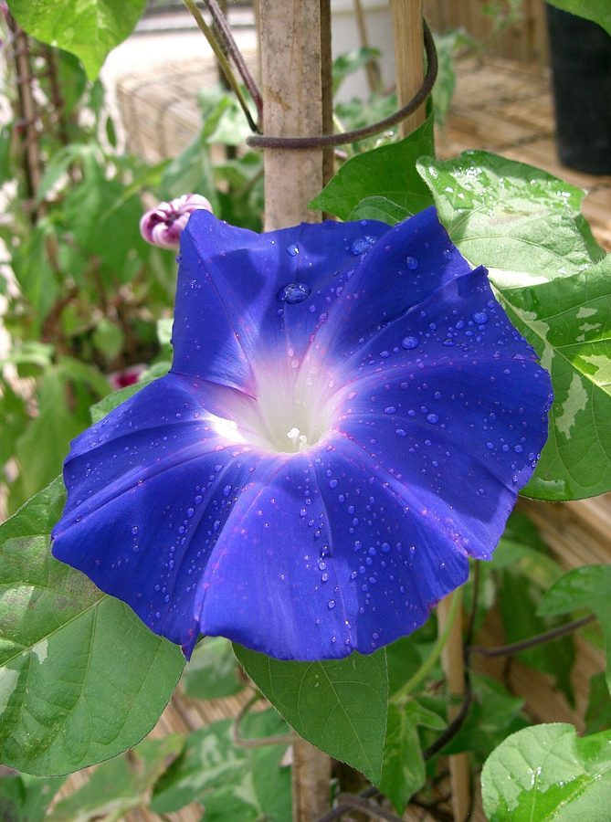

नीली घुइयाँBlue Morning Glory
Ipomoea nil · Convolvulaceae · FLR-0080

- Scientific name
- Ipomoea nil (L.) Roth
- Family
- Convolvulaceae
- Hindi
- नीली घुइयाँ
- Status here
- naturalized
- IUCN
- not evaluated
When to look कब देखें
Expected mainly in July, August, September, October, November, December.
नीली घुइयाँ / Blue Morning Glory
Ipomoea nil (L.) Roth — Convolvulaceae
नीली घुइयाँ (नीलकलमी / कालादाना / मॉर्निंग ग्लोरी) — पूर्वी उत्तर प्रदेश में ग्रामीण बाड़ों, खेतों के घेरों, और रास्तों के किनारे झाड़ियों पर चढ़ने वाली एक बहुत ही सुंदर, कोमल और वार्षिक लता (twining annual vine) है। यह मूल रूप से अनिश्चित उत्पत्ति (संभवतः उष्णकटिबंधीय अमेरिका या एशिया) का पौधा है, जो अब पूरे भारत में प्राकृतिक रूप से अभ्यस्त (naturalized) हो चुका है। इसकी सबसे बड़ी पहचान इसके बड़े, कीप के आकार के चमकीले नीले-बैंगनी रंग के फूल (bright blue-purple funnel flowers) हैं, जो सुबह के समय पूरी तरह से खिलते हैं और दोपहर ढलते ही मुरझाकर बंद हो जाते हैं (hence "morning glory")। इसके पत्ते तीन भागों में गहराई से बंटे (3-lobed leaves) होते हैं। महत्वपूर्ण विषैली चेतावनी: इसके काले त्रिकोणीय बीजों (kala dana) में एर्गिन (LSA) नामक एक रासायनिक यौगिक पाया जाता है, जो मतिभ्रम (hallucination) पैदा करने वाले रसायन एलएसडी (LSD) जैसा होता है। यह बीज अत्यधिक विषैले होते हैं, इसलिए इनके सेवन से गंभीर शारीरिक संकट आ सकता है। पारंपरिक चिकित्सा में इन बीजों का उपयोग बहुत ही सीमित मात्रा में पेट साफ़ करने के लिए किया जाता है।
Quick Identification त्वरित पहचान
| Feature | Description |
|---|---|
| Plant habit | Slender, fast-growing annual twining vine, climbing up to 2–5 meters over surrounding hedges |
| Stem | Covered in dense, rough, spreading brown hairs (retrorse hairs) that point downward |
| Leaves | Alternately arranged, simple, broad (5–15 cm), deeply split into three pointed lobes (ivy-like) |
| Flowers | Large (5–8 cm wide), trumpet-like, opening bright sky-blue or purple in the morning, fading to pink-purple before closing |
| Toxicity | TOXIC SEEDS: The black seeds (Kala Dana) contain LSA alkaloids. Do NOT ingest. Highly toxic to humans and cattle. |
Field tip: Stand near a hedge at 8 AM in October. Look for a hairy green vine with deeply 3-lobed leaves. Watch for large, spectacular blue funnel flowers. Return at 2 PM; you will see that all these blue flowers have turned pinkish-purple and wilted closed.
Morphology आकारिकी
Biometrics (typical measurements of mature plants in the northern Indian plains):
| Measurement | Range |
|---|---|
| Vine length | 2.0–5.0 m |
| Stem diameter | 2.0–4.0 mm |
| Leaf length | 5.0–15.0 cm |
| Flower diameter | 5.0–8.0 cm |
| Capsule diameter | 8.0–12.0 mm |
| Seed size | 5.0–6.0 mm |
Stem and Branches: Stems are round, thin, green, turning purplish on sunny sides, covered with long, stiff, downward-pointing hairs.
Foliage: Simple, alternate leaves. The leaf blade has three prominent lobes, the central lobe is lance-shaped and longer, and the base is deeply heart-shaped.
Flowers: Solitary or in 2-5 flowered clusters in the leaf axils. The sepals are long, lanceolate, hairy at the base, and end in long, tail-like tips.
Fruit and Seeds: A round, dry capsule. The seeds are three-angled, black-brown, covered with very short grey hairs, known as Kala Dana in trade.
Associated Species / Interactions संबंधित प्रजातियाँ
- Morning Pollinators: The bright blue flowers open at sunrise and produce nectar at the base of the white tube, attracting early-morning butterflies, bumblebees, and honeybees.
- Hedge Support: Relies on dense native shrubs like Karonda or Ziziphus to climb and reach sunlight, sometimes covering the host shrub.
Pests and Diseases कीट और रोग
- Sweet Potato Hornworm: Large green caterpillars feed heavily on the leaves, chewing edges.
- Tortoise Beetle: Small golden beetles eat circular holes in the foliage.
- White Rust: Caused by Albugo ipomoeae-panduratae, producing chalky white blisters on the leaf undersides.
Traditional and Ethnobotanical Use पारंपरिक और नृवंशवनस्पति उपयोग
- Ayurvedic Laxative (Kala Dana): In traditional Ayurvedic medicine, the seeds are roasted, crushed into a fine powder, and administered in highly controlled, minute doses under expert supervision as a powerful purgative (virechana) to treat chronic constipation.
- Traditional Fencing Ornament: Grown by villagers along their front bamboo fences to provide a natural green screen decorated with blue flowers during late monsoon mornings.
- Folk Skin Wash: The fresh leaves are crushed to make a paste, which is applied topically to treat skin rashes and minor boils.
- Natural Insecticide: The seed oil has a bitter taste and is traditionally sprayed on crop bags as a natural deterrent against storage weevils.
Expected Locally स्थानीय रूप से अपेक्षित
Not a field record. Written from published accounts for eastern Uttar Pradesh. No confirmed local sighting yet — if you have seen it, that is what the atlas needs.
अभी तक स्थानीय पुष्टि नहीं। यह विवरण प्रकाशित स्रोतों से है, किसी अवलोकन से नहीं।
A very common naturalized climber along farm margins and home fences throughout the Basti district, regularly observed in the Harraiya, Vikramjot, and Basti blocks. Residents state that the plant emerges with the monsoon in July, grows fast over the fences, and starts flowering in October. The beautiful blue blooms open only in the morning, which makes them a familiar feature of morning walks.
Distribution वितरण
Global range: Widespread across tropical Asia, Africa, and the Americas; widely naturalized globally in warm-temperate and tropical regions.
In India: Found in all states, plains, and wasteland borders.
In Uttar Pradesh: Abundant state-wide in all residential, rural, and farming districts.
In Basti district / eastern UP: Widespread across all blocks.
Research Questions शोध प्रश्न
Anyone can investigate these | कोई भी इन प्रश्नों की जाँच कर सकता है
- At what exact hour in the morning (related to sunrise) do the flowers of Blue Morning Glory open in your village during October? — Record opening times.
- At what hour in the afternoon does a blue flower change its color to pink and close? / दोपहर के किस समय नीली घुइयाँ का फूल अपना रंग बदलकर गुलाबी हो जाता है और बंद हो जाता है? — Monitor flower color changes every hour from 9 AM to 3 PM.
- What is the germination rate of Kala Dana seeds when sown in dry sand versus wet clay pots? — Conduct seedling trials.
- How many honeybees visit a single patch of Morning Glory flowers in a 10-minute window at 8 AM versus 11 AM? — Compare morning visitor counts.
- Does the leaf webber caterpillar damage Morning Glory more when grown on concrete walls compared to living green hedges? / क्या कंक्रीट की दीवारों पर उगने वाले पौधों में जीवित हरी बाड़ों के पौधों की तुलना में लीफ वेबर (Leaf Webber) का प्रकोप अधिक होता है? — Compare pest counts in different habitats.
Similar Species मिलती-जुलती प्रजातियाँ
| Species | How to tell apart | comparison |
|---|---|---|
| Pink Morning Glory (Ipomoea carnea) | Semi-aquatic woody shrub (not a vine); leaves are simple, lance-shaped; flowers are pale pink | बेहया / बेशर्म — झाड़ीनुमा पौधा, गुलाबी फूल, दलदली भूमि |
| Ivy-leaved Morning Glory (Ipomoea hederacea) | Very similar but leaves are deeply 3-lobed; sepals are long, hairy, and curved outward; flower is smaller | हेडरेशिया — मुड़े हुए बाह्यदल, छोटा फूल |
| Railway Creeper (Ipomoea cairica) | Leaves are palm-like (5-lobed); flowers are large, purple-pink; grows year-round | रेलवे बेल — हथेली जैसे पांच-कटे पत्ते, गुलाबी-बैंगनी फूल |
Field rule: Slender twining annual vine with hairy stems, deeply 3-lobed leaves, and large sky-blue or purple funnel flowers that open in the morning and close by afternoon, is the Blue Morning Glory.
Taxonomy & Classification वर्गीकरण
Original description. Carl Linnaeus described this species as Convolvulus nil in 1762 in his Systema Naturae. Albrecht Wilhelm Roth placed it in the genus Ipomoea in 1797 in his Catalecta Botanica (Vol. 1, p. 36). The genus name Ipomoea is derived from the Greek ips (worm) and homoios (resembling), referring to the twining, worm-like habit. The specific name nil comes from the Arabic nil (blue or indigo).
Subspecies. Monotypic — no subspecies are currently recognised.
Family and order placement. Placed in the order Solanales, family Convolvulaceae (morning glory family), subfamily Convolvuloideae, tribe Ipomoeeae.
Phylogenetic notes. Ipomoea nil is closely related to Ipomoea purpurea (common morning glory), sharing similar anthocyanin pathways that control the blue-to-pink color change as the flower ages.
IUCN status rationale. Not evaluated (NE) by the IUCN Red List. It has a highly secure, stable global population due to extensive naturalization and horticultural use.
Photo Gallery फोटो गैलरी
References संदर्भ
- Roth, A. W. (1797). Catalecta Botanica. Lipsiae, Vol. 1, p. 36. [original generic transfer]
- Linnaeus, C. (1762). Systema Naturae. Stockholm. [original description as Convolvulus nil]
- Brandis, D. (1906). Indian Trees (includes woody Ipomoea relatives). Archibald Constable & Co., London.
- Kirtikar, K. R. & Basu, B. D. (1935). Indian Medicinal Plants. Vol. III. Lalit Mohan Basu, Allahabad.
- Austin, D. F. & Huáman, Z. (1996). A Synopsis of Ipomoea (Convolvulaceae) in the Americas. Taxon.
- GBIF Occurrence Data — Ipomoea nil, India (2010–2025).
Source file: species/flora/climbers/blue_morning_glory.md